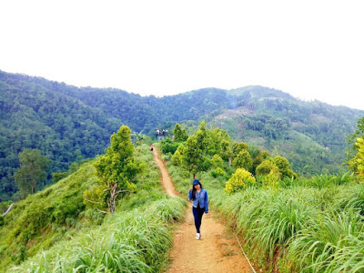

Posting Teratas
Objek Wisata Yang Berada Di Kota Palopo
Kota Palopo adalah sebuah kota yang terletak di sebelah utara provinsi Sulawesi Selatan, Indonesia. Dimana di sebelah barat berbatasan dengan Kabupaten Tana Toraja, di sebelah utara dengan selatan berbatasan dengan Kabupaten Luwu dan di sebelah timur berbatasan dengan Teluk Bone.
Kota Palopo merupakan kota ketiga setelah Makassar dan Parepare. Terkenal dengan makanan khasnya seperti kapurung, dange, pacco, lawak dan yang lainnya.
Selain makanan khasnya, Palopo juga memiliki destinasi wisata alam. Berikut beberapa objek wisata yang wajib anda kunjungi.
- Bukit Kambo
- Gua Kalo Dewata
- Pulau Libukang

Bukit Kambo merupakan surga yang tersembunyi di balik ramainya Kota Palopo. Bukit Kambo terletak di sebelah barat kota Palopo tepatnya di kecamatan Mungkajang yang berjarak sekitar 5 km dari pusat kota atau sekitar setengah jam dari kota Palopo.


Di zaman penjajahan, gua ini dijadikan sebagai benteng pertahanan para pejuang kemerdekaan dari serangan para tentara Jepang dan Koloni Belanda. Letaknya di Kelurahan Battang Kecamatan Wara Barat kilometer 12 arah Palopo-Toraja atau jaraknya sekitar 9 Km dari pusat kota palopo. Di dalamnya terdapat sebuah lubang dengan kedalaman sekitar 30 meter. Meski minim stalaktit dan stalakmit, Kalo’k Dewata menyimpan pesona wisata yang cukup menarik untuk ditelusuri. Gua ini adalah gua tertua yang diyakini sebagai tempat peristirahatan para dewa. Dimana di dalam liang gua terdapat tiga ruangan bersegi empat. Selain itu, juga ada keris yang terbuat dari batu, serta perabot kuno berupa guci benda kuno lainnya. Menempuh berjalanan menanjak dan berkelok di lintas transSulawesi Palopo-Tanatoraja, dibutuhkan waktu sekitar 20 menit untuk mencapai lorong Gua Kallo Dewata yang menyimpang keunikan yang luar biasa itu. Bayangkan saja, lorong di gua ini dapat terhubung dengan beberapa gua lain yang ada di Kota Palopo, walaupun jaraknya terbilang sangat jauh. Seperti salah satu gua yang ada di Kecamatan Bua, Kabupaten Luwu. Gua Kallo Dewata, selama ini dijadikan tempat bersarang kelelawar. Potensi ini dimanfaatkan masyarakat setempat dengan mengumpulkan kotoran kelelawar untuk dijual sebagai pupuk tanaman.

Pulau yang luasnya ± 8Ha dan berjarak 2 km dari kota Palopo ini dapat ditempuh dengan menggunakan perahu bermotor. Pulau ini merupakan warisan turun temurun dari masyarakat Pulau Libukang, dan secara wasiat tidak bisa dimiliki secara pribadi karena di pulau ini terdapat kuburan yang disakralkan oleh penduduk setempat. Makam ini adalah makam Nenek Hawang dan Nenek Poko' yang merupakan penghuni pertama pulau ini. Pulau ini dimanfaatkan untuk menanam beberapa komoditi pertanian yang menjanjikan, seperti: cengkeh dan cokelat. Pulau ini memiliki panorama alam yang elok dan bisa dijadikan tempat berwisata dan beristirahat dengan keluarga maupun dengan teman.